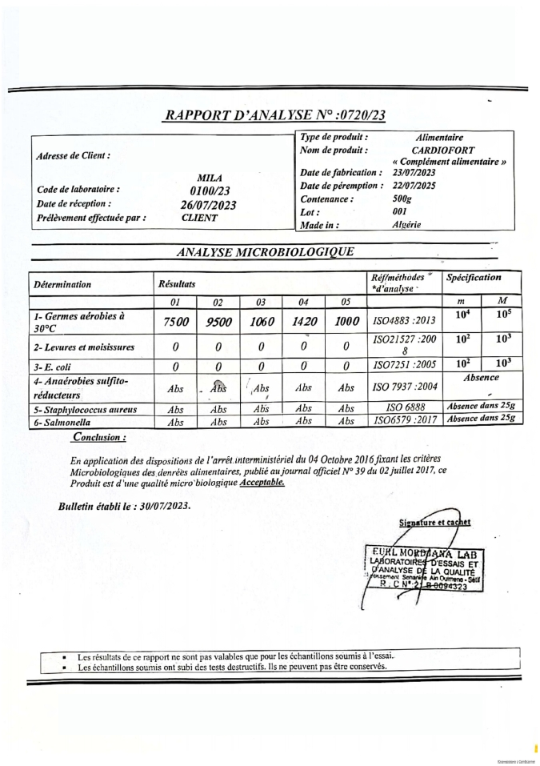

Salud AF
الانتصار على الدوالي أصبح أمر ممكن! تم تطوير منتجاً ثورياً للمساعدة على التخلص من الدوالي .
منتج طبيعي 100% للمساعدة على التخلص من الدوالي لأول مرة في الجزائر .

قصتي :
منذ فترة ليس ببعيدة تم إكتشاف منتج ثوري للتخلص من مشاكل الدوالي و التخلص من مشاكل الاوعية الدموية و مشاكل الأوردة . وها في هذا المقال سنوضح لكم تفاصيل لقاء صحفي كان مع المختص و العالم الذي اكتشف هذا المنتج و الذي بنفسه اخترع صيغة هذا المنتج .
و هنا كان تفاصيل الحوار ما بين مراسل لقناة شهيرة و بين هذه العالمة التي اكتشفت المنتج و تحدثوا هنا عن تفاصيل هذا المنتج و مكوناته :
آخر الأخبار

الدوالي: الأعراض. كيف يتم التخلص من الدوالي

طرق للتخلص من مشاكل الأوردة

العقيدات الوريدية: الأسباب والأعراض و الحل
نعم بالطبع و ها هي شهادة التصديق :
القروح و هي جروح لا يمكن التخلص منها لفترة طويلة. واحد من كل خمسة اشخاص سيعانون من هذه القروح إذا لم يتخلصوا من الدوالي بالشكل المناسب .
العواقب: ألم حاد، حكة لا تحتمل، ثقل ، وغالباً ما تؤدي إلى تكوين أورام خبيثة، وتنضم عادة مشاكل صحية إضافية إلى القرحة، مما يمكن أن يؤدي إلى مشاكل أصعب و أكبر مستقبلياً .
الترومبوفلبايت و هي نوع من الجلطات، حيث يتورم الجدار الداخلي للوعاء الدموي. تؤثر الحالة على الأوردة السطحية والعميقة على حد سواء. العواقب: جلطة الدم في الشريان الرئوي، حيث تدخل الجلطة الدموية أولاً إلى الأذين الأيمن، ثم إلى البطين الأيمن من القلب، ومن هناك إلى الشريان الرئوي. ثم يعتمد كل شيء على حجم الجلطة: إما يتطور الامر او يبقي على حاله و لكن في كل الحالات هو شيء خطر جداً .
القصور الوريدي و هو اضطراب في تدفق الدم عبر الأوردة العميقة في الأطراف السفلية. العواقب: قروح زهرية (جروح لا تلتئم)، عدوى الطرف، النزف، الترومبوفلبايت، الانسداد بواسطة تجلطات الدم في الأوردة العميقة.
الجلطة الوريدية العميقة هي حالة تحدث عندما تتشكل كتل ترومبوتية في الأوردة العميقة (الرئيسية) في الساقين.
الجلطة الوريدية العميقة هي حالة مرضية تحدث عندما تتشكل كتل ترومبوتية في الأوردة العميقة (الرئيسية) في الساقين.
العواقب: إغلاق كامل للوعاء، تدمير النسيج، مشاكل ما بعد الجلطة، إعاقة. الدوالي دون التخلص منها بشكل سليم يمكن أن يؤدي أيضا إلى إعاقة وعدم القدرة على المشي بشكل مستقل، وبالتالي الإعاقة.
لطلب المنتج :
عند طلب المنتج Cardiofort من النموذج الرسمي ستحصل على المنتج الأصلي في الجزائر . يمكنك أن تكون واثقاً من أن المنتج عالي الجودة للغاية.
قريت المراجعات و حبيت نسييه هذا المنتج.
راني خليت طالب في سيت،لدي امل مزال دايرين تخفيض50%
عندي يومين ملي شريتو هذه هي علبة
انا كومونديتو مع تخفيض !قالولي غدوا اجيبهولي حتى لدار!
اوافق ان CardioFort منتج مثالي إنه المنتج الأكثر فعالية وبأسعار معقولة. إنه ميسور التكلفة 10 مرات مقارنة بالمنتجات الاخرى. حتى بدون الخصم. علاوة على ذلك ، فإن تأثيره أفضل .
CardioFort افضل طريقة لتخفيض الكوليسترول و التخلص من الدوالي و ليس له أي آثار جانبية لأنه مصنوع من مكونات طبيعية . أنصح الجميع به !.
CardioFort ورتهولي هذا منتج سحبتي و طلبت منذ ايام ،جبوهولي في 24ساعة وراني بفضل التخفيص حصلت على دورتين و هذه فوطو ديالهم👍

راني كومنديت لي ميمتي ،صح راهم دايرين برومو،ننصح الجميع!!!
هذا المنتج رائع لقد إستخدمته و تخلص من الدوالي في خلال عدة أسابيع بدون أي تعب او مجهود .أنصح الجميع به .
جربت المكمل الغذائي CardioFort الشهر الماضي. في بعض الأحيان كان الضغط خارج عن المألوف وكنت اعاني أيضًا من الدوالي بشكل كبير . بعد 2 - 2.5 أسابيع من بدء استعمال المنتج ، بدأت الدوالي في الإختفاء . الآن أشعر أنني شخص يتمتع بصحة جيدة.
أنا أحد أولئك الذين طلبوا بالفعل وجربوا CardioFort قبل ذلك ، كنت أعاني من ظهور عروق بارزة في رجلي و يدي و هي دوالي بالتأكيد . لم أعد أتذكر متى كانت آخر مرة تعرضت فيها ذهبت للشاطئ بسبب هذا المنظر المريع لدي على ارجلي . بناءً على نصيحة صديق لي ، قررت تنظيف الاوعية الدموية. بعد شهر من تناول CardioFort ، عاد الضغط إلى طبيعته واستقر. لقد مر الآن شهرين دون إرتفاع الضغط. إنه شعور مختلف تمامًا - أفضل بكثير من ذي قبل. أنصح بهذا المنتج الرائع للجميع وخاصة بهذا السعر.
لقد جربت العديد من الأشياء لمحاربة الدوالي... حتى المنتجات الكيميائية لكنني لم أر نتائجاً. في بعض الأحيان تصغر أوردتي قليلاً، ولكنها دائمًا تعود للنمو. لكن مع المكمل الغذائي Cardiofort، شعرت ان الدوالي بدأت تختفي . أنصحكم جميعاً بتجربته . لقد ساعدني كثيرًا، بالتأكيد سيساعدكم أيضًا.